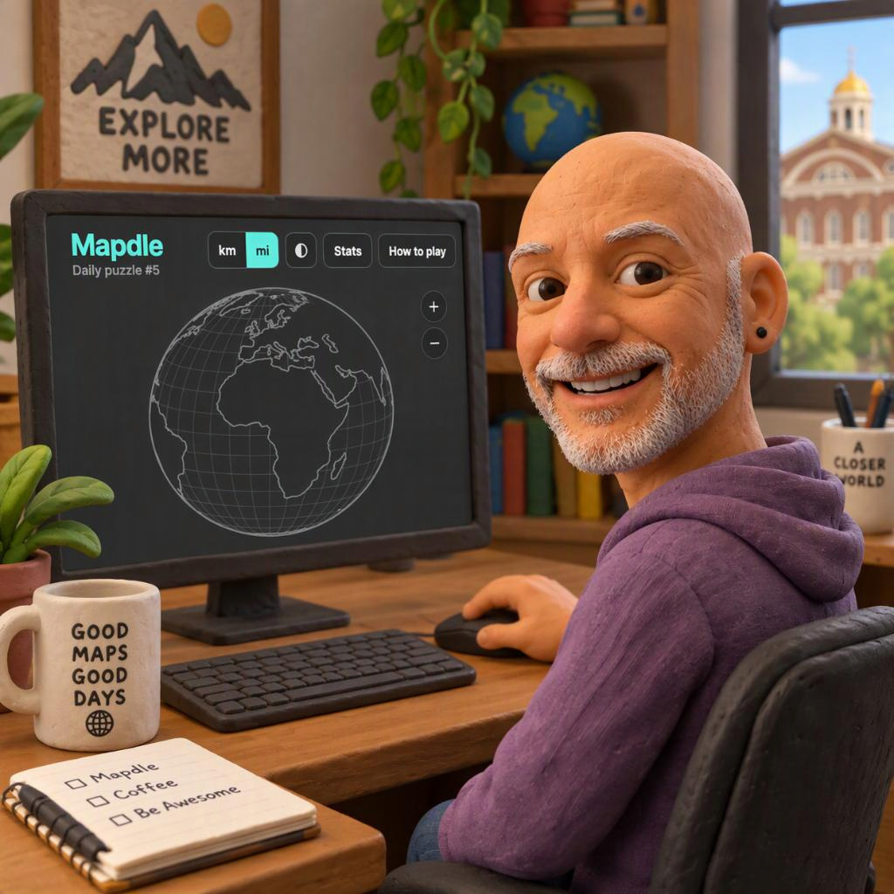

<meta charset="utf-8">
<meta name="viewport" content="width=device-width, initial-scale=1, viewport-fit=cover">
<meta name="description" content="Brain Bench Apps makes free, installable web apps for learning: Mapdle, Flashcard Flurry, Geography Gym, and Analog Math Clock.">
<meta name="claude:viewport-fit-sides" content="cover">
<link rel="canonical" href="https://brainbenchapps.com/">
<meta property="og:type" content="website">
<meta property="og:site_name" content="Brain Bench Apps">
<meta property="og:title" content="Brain Bench Apps — Learn, practice, play">
<meta property="og:description" content="Free, installable web apps for learning: Mapdle, Flashcard Flurry, Geography Gym, and Analog Math Clock.">
<meta property="og:url" content="https://brainbenchapps.com/">
<meta property="og:image" content="https://brainbenchapps.com/og/brain-bench-apps.png">
<meta property="og:image:width" content="1200">
<meta property="og:image:height" content="630">
<meta property="og:image:alt" content="Brain Bench Apps — Learn, practice, play. Give your brain a workout.">
<meta name="twitter:card" content="summary_large_image">
<link rel="icon" href="/favicon.ico" sizes="any">
<link rel="icon" href="/icons/icon.svg" type="image/svg+xml">
<link rel="apple-touch-icon" href="/icons/apple-touch-icon.png">
<link rel="manifest" href="/site.webmanifest">
<meta name="theme-color" content="#4f46e5">
<title>Brain Bench Apps</title>
<link rel="preconnect" href="https://fonts.gstatic.com" crossorigin>
<link rel="stylesheet" href="https://fonts.googleapis.com/css2?family=Archivo:wght@500;600;700&family=IBM+Plex+Mono:wght@400;500&family=IBM+Plex+Sans:wght@400;500;600&display=swap">
<style>
  /* Layout: full-width bands over one 1060px column; a ruled "bench" line carries the three apps on a shared baseline */
  :root {
    --paper: #eef0f5;
    --surface: #ffffff;
    --ink: #11172b;
    --ink-soft: #4b5468;
    --rule: #c3cada;
    --accent: #4338ca;
    --accent-soft: #e6e4fb;
    --ff: #0f7a57;
    --gg: #4338ca;
    --mapdle: #b0325c;
    --amc: #9c6a16;

    --display: 'Archivo', 'Helvetica Neue', system-ui, sans-serif;
    --body: 'IBM Plex Sans', system-ui, -apple-system, 'Segoe UI', sans-serif;
    --mono: 'IBM Plex Mono', ui-monospace, 'SFMono-Regular', Menlo, monospace;
  }

  @media (prefers-color-scheme: dark) {
    :root:not([data-theme="light"]) {
      --paper: #0d1120;
      --surface: #171d2f;
      --ink: #e9ecf5;
      --ink-soft: #a2aabe;
      --rule: #2f3654;
      --accent: #a9a4ff;
      --accent-soft: #221d4e;
      --ff: #4ec49a;
      --gg: #a9a4ff;
      --mapdle: #f287a7;
      --amc: #e0a84a;
      color-scheme: dark;
    }
  }

  :root[data-theme="dark"] {
    --paper: #0d1120;
    --surface: #171d2f;
    --ink: #e9ecf5;
    --ink-soft: #a2aabe;
    --rule: #2f3654;
    --accent: #a9a4ff;
    --accent-soft: #221d4e;
    --ff: #4ec49a;
    --gg: #a9a4ff;
    --mapdle: #f287a7;
    --amc: #e0a84a;
    color-scheme: dark;
  }

  body {
    background: var(--paper);
    color: var(--ink);
    font-family: var(--body);
    font-size: 17px;
    line-height: 1.62;
    -webkit-font-smoothing: antialiased;
  }

  .wrap {
    max-width: 1060px;
    margin-inline: auto;
    padding-left: max(16px, env(safe-area-inset-left, 0px));
    padding-right: max(16px, env(safe-area-inset-right, 0px));
  }

  a { color: inherit; }
  a:focus-visible, button:focus-visible {
    outline: 2px solid var(--accent);
    outline-offset: 3px;
    border-radius: 2px;
  }

  .eyebrow {
    font-family: var(--mono);
    font-size: 0.72rem;
    letter-spacing: 0.16em;
    text-transform: uppercase;
    color: var(--ink-soft);
    margin: 0;
  }

  /* ---- header ---- */
  .site-head { border-bottom: 1px solid var(--rule); background: var(--surface); }
  .site-head .wrap {
    padding-block: 14px;
    display: flex;
    flex-wrap: wrap;
    align-items: baseline;
    gap: 8px 22px;
  }
  .wordmark {
    font-family: var(--display);
    font-weight: 700;
    font-size: 1.05rem;
    letter-spacing: -0.015em;
    text-decoration: none;
    margin-right: auto;
  }
  .wordmark .dot { color: var(--accent); }
  .site-nav { display: flex; gap: 20px; font-size: 0.88rem; }
  .site-nav a { color: var(--ink-soft); text-decoration: none; }
  .site-nav a:hover { color: var(--ink); text-decoration: underline; text-underline-offset: 4px; }

  /* ---- hero ---- */
  .hero .wrap {
    padding-block: clamp(40px, 7vw, 72px) 40px;
    display: flex;
    flex-direction: column;
    align-items: center;
    text-align: center;
  }
  .hero .mascot {
    width: clamp(92px, 16vw, 132px);
    height: auto;
    aspect-ratio: 1;
    border-radius: 24%;
    display: block;
  }
  .hero .eyebrow { margin-top: 22px; }
  .hero h1 {
    font-family: var(--display);
    font-weight: 700;
    font-size: clamp(1.95rem, 5.2vw, 3.35rem);
    line-height: 1.06;
    letter-spacing: -0.022em;
    text-wrap: balance;
    margin: 14px 0 0;
    max-width: 30ch;
  }
  .hero h1 .soft { color: var(--ink-soft); }
  .hero p.lead {
    font-size: clamp(1.1rem, 2.4vw, 1.3rem);
    line-height: 1.55;
    color: var(--ink-soft);
    max-width: 48ch;
    margin: 22px 0 0;
    text-wrap: pretty;
  }
  .hero p.lead strong { color: var(--ink); font-weight: 600; }

  .jump {
    display: flex;
    flex-wrap: wrap;
    justify-content: center;
    gap: 10px;
    margin: 32px 0 0;
    padding: 0;
    list-style: none;
  }
  .jump a {
    display: inline-flex;
    align-items: center;
    gap: 9px;
    font-family: var(--mono);
    font-size: 0.78rem;
    text-decoration: none;
    padding: 7px 13px 7px 11px;
    border: 1px solid var(--rule);
    border-radius: 999px;
    background: var(--surface);
    transition: border-color 0.18s ease, transform 0.18s ease;
  }
  .jump a:hover { border-color: var(--ink-soft); transform: translateY(-1px); }
  .swatch {
    width: 9px; height: 9px; border-radius: 2px; flex: none;
  }

  /* ---- the bench rule: a ruler the app cards sit on ---- */
  .bench {
    height: 15px;
    background:
      linear-gradient(var(--rule), var(--rule)) 0 0 / 100% 1px no-repeat,
      repeating-linear-gradient(90deg, var(--rule) 0 1px, transparent 1px 14px) 0 0 / 100% 6px no-repeat;
  }

  /* ---- apps ---- */
  .apps .wrap { padding-block: 34px 10px; }
  .section-head { display: flex; flex-wrap: wrap; gap: 6px 18px; align-items: baseline; }
  .section-head h2 {
    font-family: var(--display);
    font-weight: 700;
    font-size: clamp(1.55rem, 3.2vw, 2.1rem);
    letter-spacing: -0.02em;
    margin: 0;
  }
  .section-head p { margin: 0; color: var(--ink-soft); font-size: 1.03rem; }

  /* flagship: Mapdle gets its own block above the three app cards */
  .feature {
    --tint: var(--mapdle);
    margin-top: 26px;
    background: var(--surface);
    border: 1px solid var(--rule);
    border-left: 4px solid var(--tint);
    border-radius: 6px;
    padding: 26px 24px;
    display: grid;
    grid-template-columns: minmax(0, 1.5fr) minmax(0, 1fr);
    gap: 24px 36px;
    align-items: start;
  }
  .feature .badge {
    display: inline-block;
    font-family: var(--mono);
    font-size: 0.68rem;
    letter-spacing: 0.12em;
    text-transform: uppercase;
    color: var(--tint);
    border: 1px solid var(--tint);
    border-radius: 999px;
    padding: 3px 10px;
  }
  .feature h3 {
    font-family: var(--display);
    font-weight: 700;
    font-size: clamp(1.5rem, 3.4vw, 2rem);
    letter-spacing: -0.015em;
    line-height: 1.12;
    margin: 14px 0 0;
  }
  .feature .tagline { margin: 10px 0 0; font-weight: 500; font-size: 1.05rem; }
  .feature .blurb { margin: 12px 0 0; color: var(--ink-soft); max-width: 58ch; }
  .feature .host { font-family: var(--mono); font-size: 0.74rem; color: var(--ink-soft); margin: 12px 0 0; }
  .feature .play {
    display: inline-flex;
    align-items: center;
    gap: 10px;
    margin-top: 20px;
    padding: 11px 20px;
    border-radius: 6px;
    background: var(--tint);
    color: var(--paper);
    font-weight: 600;
    text-decoration: none;
    transition: transform 0.18s ease;
  }
  .feature .play:hover { transform: translateY(-1px); }
  .feature ul {
    margin: 0;
    padding: 0;
    list-style: none;
    display: grid;
    gap: 9px;
    font-family: var(--mono);
    font-size: 0.78rem;
    color: var(--ink-soft);
  }
  .feature ul li { display: flex; gap: 9px; min-width: 0; }
  .feature ul li::before { content: "—"; color: var(--tint); flex: none; }
  .feature .side-label {
    font-family: var(--mono);
    font-size: 0.68rem;
    letter-spacing: 0.12em;
    text-transform: uppercase;
    color: var(--ink-soft);
    margin: 0 0 12px;
  }
  @media (max-width: 720px) {
    .feature { grid-template-columns: 1fr; }
  }

  .card-grid {
    display: grid;
    grid-template-columns: repeat(auto-fit, minmax(265px, 1fr));
    gap: 20px;
    margin-top: 26px;
    padding: 0;
    list-style: none;
  }
  .card {
    display: flex;
    flex-direction: column;
    gap: 14px;
    min-width: 0;
    background: var(--surface);
    border: 1px solid var(--rule);
    border-radius: 6px;
    padding: 24px 22px 22px;
  }
  .card h3 {
    font-family: var(--display);
    font-weight: 700;
    font-size: 1.42rem;
    letter-spacing: -0.015em;
    line-height: 1.15;
    margin: 0;
  }
  .card h3::after {
    content: "";
    display: block;
    width: 46px;
    height: 3px;
    margin-top: 10px;
    background: var(--tint);
  }
  .card .tagline { margin: 0; font-weight: 500; }
  .card .blurb { margin: 0; color: var(--ink-soft); font-size: 1.01rem; }
  .card ul {
    margin: 0;
    padding: 0;
    list-style: none;
    display: grid;
    gap: 7px;
    font-family: var(--mono);
    font-size: 0.78rem;
    color: var(--ink-soft);
  }
  .card ul li { display: flex; gap: 9px; min-width: 0; }
  .card ul li::before { content: "—"; color: var(--tint); flex: none; }
  .card .open {
    margin-top: auto;
    padding-top: 6px;
    display: inline-flex;
    align-items: baseline;
    gap: 7px;
    font-weight: 600;
    font-size: 0.95rem;
    color: var(--tint);
    text-decoration: none;
    width: fit-content;
  }
  .card .open:hover { text-decoration: underline; text-underline-offset: 4px; }
  .card .open .arrow { font-family: var(--mono); }
  .card .host {
    font-family: var(--mono);
    font-size: 0.74rem;
    color: var(--ink-soft);
    margin: 0;
  }
  .card .badge {
    align-self: flex-start;
    font-family: var(--mono);
    font-size: 0.68rem;
    letter-spacing: 0.12em;
    text-transform: uppercase;
    color: var(--tint);
    border: 1px solid var(--tint);
    border-radius: 999px;
    padding: 3px 10px;
  }

  /* ---- approach ---- */
  .approach { margin-top: 56px; border-top: 1px solid var(--rule); background: var(--surface); }
  .approach .wrap { padding-block: 48px 52px; }
  .notes {
    display: grid;
    grid-template-columns: repeat(auto-fit, minmax(240px, 1fr));
    gap: 30px 36px;
    margin: 30px 0 0;
    padding: 0;
    list-style: none;
  }
  .notes li { min-width: 0; border-top: 1px solid var(--rule); padding-top: 14px; }
  .notes h3 {
    font-family: var(--display);
    font-weight: 700;
    font-size: 1.1rem;
    margin: 0 0 6px;
  }
  .notes p { margin: 0; color: var(--ink-soft); font-size: 1.01rem; }

  /* ---- next ---- */
  .next .wrap { padding-block: 48px 52px; }
  .next-box {
    background: var(--accent-soft);
    border-radius: 6px;
    padding: clamp(24px, 4vw, 34px);
  }
  .next-box h2 {
    font-family: var(--display);
    font-weight: 700;
    font-size: clamp(1.3rem, 2.8vw, 1.7rem);
    letter-spacing: -0.02em;
    margin: 12px 0 0;
  }
  .next-box p { max-width: 62ch; margin: 14px 0 0; color: var(--ink); }
  .next-box p.muted { color: var(--ink-soft); font-size: 0.93rem; }

  /* ---- about ---- */
  .about { border-top: 1px solid var(--rule); background: var(--paper); }
  .about .wrap {
    padding-block: 48px 56px;
    display: grid;
    grid-template-columns: minmax(0, 1.7fr) minmax(0, 0.9fr);
    gap: 36px 48px;
    align-items: start;
  }
  .about .story { min-width: 0; }
  .creator {
    min-width: 0;
    background: var(--surface);
    border: 1px solid var(--rule);
    border-radius: 6px;
    padding: 22px 20px;
  }
  .creator img {
    width: 100%;
    max-width: 190px;
    aspect-ratio: 1;
    object-fit: cover;
    border-radius: 6px;
    display: block;
  }
  .creator h3 {
    font-family: var(--display);
    font-weight: 700;
    font-size: 1.15rem;
    letter-spacing: -0.01em;
    margin: 16px 0 0;
  }
  .creator p.role {
    margin: 6px 0 0;
    color: var(--ink-soft);
    font-size: 0.92rem;
    max-width: none;
  }
  .creator ul {
    margin: 16px 0 0;
    padding: 16px 0 0;
    border-top: 1px solid var(--rule);
    list-style: none;
    display: flex;
    flex-wrap: wrap;
    gap: 8px;
  }
  .creator ul a {
    display: inline-flex;
    align-items: center;
    justify-content: center;
    width: 38px;
    height: 38px;
    color: var(--ink-soft);
    border: 1px solid var(--rule);
    border-radius: 999px;
    transition: border-color 0.18s ease, color 0.18s ease;
  }
  .creator ul a:hover { color: var(--accent); border-color: var(--accent); }
  .creator .icon {
    width: 16px;
    height: 16px;
    flex: none;
    background: currentColor;
    -webkit-mask: var(--icon) center / contain no-repeat;
    mask: var(--icon) center / contain no-repeat;
  }
  @media (min-width: 761px) {
    /* drop the card to the first line of body text, clear of the eyebrow and heading */
    .creator { margin-top: 96px; }
  }
  @media (max-width: 760px) {
    .about .wrap { grid-template-columns: 1fr; }
    .creator { max-width: 420px; }
  }
  .about h2 {
    font-family: var(--display);
    font-weight: 700;
    font-size: clamp(1.3rem, 2.8vw, 1.7rem);
    letter-spacing: -0.015em;
    margin: 10px 0 0;
  }
  .about p {
    max-width: 66ch;
    margin: 18px 0 0;
    color: var(--ink-soft);
  }
  .about p.opening { color: var(--ink); }
  .about .signoff {
    font-family: var(--display);
    font-weight: 600;
    font-size: 1.05rem;
    color: var(--ink);
    margin-top: 24px;
  }

  /* ---- footer ---- */
  .site-foot { border-top: 1px solid var(--rule); background: var(--surface); }
  .site-foot .wrap {
    padding-block: 30px 38px;
    display: flex;
    flex-wrap: wrap;
    gap: 18px 40px;
    justify-content: space-between;
    align-items: flex-start;
    font-size: 0.88rem;
  }
  .foot-links { display: flex; flex-wrap: wrap; gap: 8px 22px; font-family: var(--mono); font-size: 0.78rem; }
  .foot-links a { color: var(--ink-soft); text-decoration: none; }
  .foot-links a:hover { color: var(--ink); text-decoration: underline; text-underline-offset: 4px; }
  .site-foot .legal { color: var(--ink-soft); font-family: var(--mono); font-size: 0.75rem; margin: 0; }

  @media (prefers-reduced-motion: reduce) {
    * { transition: none !important; animation: none !important; }
  }
</style>

<header class="site-head">
  <div class="wrap">
    <a class="wordmark" href="#top">Brain Bench Apps<span class="dot">.</span></a>
    <nav class="site-nav" aria-label="Sections">
      <a href="#apps">Apps</a>
      <a href="#approach">How they work</a>
      <a href="#about">About</a>
      <a href="#next">What's next</a>
    </nav>
  </div>
</header>

<main id="top">
  <section class="hero">
    <div class="wrap">
      
      <p class="eyebrow">Independent app studio · Since 2026</p>
      <h1>Learn, practice, play.<br><span class="soft">Give your brain a workout.</span></h1>
      <p class="lead">Free apps that add to your home screen and keep working offline. <strong>No accounts, no ads</strong>, and your cards, scores, and settings stay on your device.</p>
      <ul class="jump">
        <li><a href="#mapdle"><span class="swatch" style="background: var(--mapdle)"></span>Mapdle</a></li>
        <li><a href="#flashcard-flurry"><span class="swatch" style="background: var(--ff)"></span>Flashcard Flurry</a></li>
        <li><a href="#geography-gym"><span class="swatch" style="background: var(--gg)"></span>Geography Gym</a></li>
        <li><a href="#analog-math-clock"><span class="swatch" style="background: var(--amc)"></span>Analog Math Clock</a></li>
      </ul>
    </div>
  </section>

  <div class="wrap"><div class="bench" role="presentation"></div></div>

  <section class="apps" id="apps">
    <div class="wrap">
      <div class="section-head">
        <h2>Learning exercises</h2>
        <p>All of them are free, and all of them run in your browser.</p>
      </div>

      <div class="feature" id="mapdle">
        <div>
          <span class="badge">Daily exercise</span>
          <h3>Mapdle</h3>
          <p class="tagline">One hidden place. Five pins.</p>
          <p class="blurb">A new location every day. Drop up to five pins and each one is scored by how close you got, with the colors telling you how warm you are. After the reveal, a pop-up gives you a fact about the place, its coordinates, and somewhere to read more.</p>
          <p class="host">Play it at geographygym.com/mapdle</p>
          <a class="play" href="https://geographygym.com/mapdle/">Play today's Mapdle <span aria-hidden="true">→</span></a>
        </div>
        <div>
          <p class="side-label">What you get</p>
          <ul>
            <li>A fresh puzzle every day</li>
            <li>Scored by distance</li>
            <li>Streaks and milestone badges</li>
            <li>Share your results</li>
            <li>Places, parks, and waterways</li>
          </ul>
        </div>
      </div>

      <ul class="card-grid">
        <li class="card" id="flashcard-flurry" style="--tint: var(--ff)">
          <h3>Flashcard Flurry</h3>
          <p class="host">flashcardflurry.com</p>
          <p class="tagline">Your cards. Your pace. Your device.</p>
          <p class="blurb">Make cards one at a time, paste a list, or import a file — then study with classic flashcards, Matching Pairs, or Multiple Choice. It remembers the exact card and shuffle order you left off on.</p>
          <ul>
            <li>50+ ready-made decks</li>
            <li>Three ways to study</li>
            <li>Full backup and restore</li>
            <li>No account, no cloud database</li>
          </ul>
          <a class="open" href="https://flashcardflurry.com/">Open Flashcard Flurry <span class="arrow" aria-hidden="true">→</span></a>
        </li>

        <li class="card" id="geography-gym" style="--tint: var(--gg)">
          <h3>Geography Gym</h3>
          <p class="host">geographygym.com</p>
          <p class="tagline">Give your world knowledge a workout.</p>
          <p class="blurb">Quick games that build real geographic intuition: states and capitals, countries, landmarks, waterways, national parks, and mountains. Pick the subjects you want to work on and drill just those.</p>
          <ul>
            <li>U.S. states and world countries</li>
            <li>Landmarks, waterways, and parks</li>
            <li>Mountains and volcanoes</li>
            <li>Study lists and quizzes</li>
          </ul>
          <a class="open" href="https://geographygym.com/">Open Geography Gym <span class="arrow" aria-hidden="true">→</span></a>
        </li>

        <li class="card" id="analog-math-clock" style="--tint: var(--amc)">
          <h3>Analog Math Clock</h3>
          <p class="host">analogmathclock.com</p>
          <p class="tagline">Practice math every time you check the time.</p>
          <p class="blurb">An analog clock with equations where the numerals should be — 3+1 where the four goes, √64 where the eight goes. Pick a difficulty, refresh for a new set, or send in equations of your own.</p>
          <ul>
            <li>Simple, advanced, and complex levels</li>
            <li>Alarms and multiple clocks</li>
            <li>World time zones</li>
            <li>Binary and Maya numerals</li>
          </ul>
          <a class="open" href="https://analogmathclock.com/">Open Analog Math Clock <span class="arrow" aria-hidden="true">→</span></a>
        </li>
      </ul>
    </div>
  </section>

  <section class="approach" id="approach">
    <div class="wrap">
      <p class="eyebrow">How they work</p>
      <div class="section-head" style="margin-top: 10px">
        <h2>Web apps, built to feel like real apps</h2>
      </div>
      <ul class="notes">
        <li>
          <h3>Install without an app store</h3>
          <p>In Safari on iPhone or iPad, tap Share, then Add to Home Screen. In Chrome on Android, choose Install app. The icon lands on your home screen like any other app.</p>
        </li>
        <li>
          <h3>Keep working offline</h3>
          <p>The first visit and each update need a connection. After that, the app runs from your device — on a plane, on the subway, or anywhere the signal drops.</p>
        </li>
        <li>
          <h3>Nothing to sign up for</h3>
          <p>No account, no password, and no paywall in front of the core of any app. Open the link and start.</p>
        </li>
        <li>
          <h3>Analytics, kept to a minimum</h3>
          <p>Geography Gym and Mapdle count page visits through Umami, so it's clear which games people actually play. Flashcard Flurry and Analog Math Clock measure nothing at all.</p>
        </li>
        <li>
          <h3>Feedback goes straight to the source</h3>
          <p>Every app links to its own FAQ, support page, or feedback form, and the suggestions that come in shape what gets built next.</p>
        </li>
      </ul>
    </div>
  </section>

  <section class="about" id="about">
    <div class="wrap">
      <div class="story">
      <p class="eyebrow">About</p>
      <h2>How Brain Bench Apps started</h2>
      <p class="opening">Brain Bench Apps started with a stack of index cards. My wife was studying U.S. civics, and I was sure there had to be a better way to review flashcards than carrying them around. So I built Flashcard Flurry, so she could study from anywhere, offline, even in bed.</p>
      <p>After that, inspiration turned up everywhere. In an office somewhere I saw an analog clock with equations printed where the numbers should be. Good idea, with one flaw: printed equations get solved once, and after that you're just reading a clock. So Analog Math Clock changes them — a new set whenever you want, at the difficulty you pick. Then came Geography Gym, a collection of quick games covering U.S. states and capitals, world cities, countries, landmarks, waterways, mountains, and national parks.</p>
      <p>Geography Gym inspired Mapdle, a daily geography challenge that brings players back each day to test their knowledge, earn badges, and share results with friends and family. What began as one app for one person studying at the kitchen table keeps picking up new games, categories, and ideas.</p>
      <p class="signoff">— Joe</p>
      </div>

      <aside class="creator">
        
        <h3>Joe Lurie</h3>
        <p class="role">Creator of Brain Bench Apps</p>
        <ul>
          <li><a href="https://www.linkedin.com/in/joelurie/" aria-label="Joe Lurie on LinkedIn"><span class="icon" style="--icon: url('InBug-Black.png')"></span></a></li>
          <li><a href="https://x.com/LURIE_MRJOSEPH" aria-label="Joe Lurie on X"><span class="icon" style="--icon: url('x.svg')"></span></a></li>
        </ul>
      </aside>
    </div>
  </section>

  <section class="next" id="next">
    <div class="wrap">
      <div class="next-box">
        <p class="eyebrow">What's next</p>
        <h2>More to come</h2>
        <p>Mapdle is being prepared for release as its own iOS app, with web play staying on Geography Gym. The other apps are headed for the Apple and Android app stores as well, and new ones join the lineup as they're built.</p>
        <p class="muted">Have an idea for one? Each app's feedback link reaches the same desk.</p>
      </div>
    </div>
  </section>
</main>

<footer class="site-foot">
  <div class="wrap">
    <div>
      <p class="legal">© 2026 Brain Bench Apps · brainbenchapps.com</p>
    </div>
    <div class="foot-links">
      <a href="https://flashcardflurry.com/">Flashcard Flurry</a>
      <a href="https://geographygym.com/">Geography Gym</a>
      <a href="https://analogmathclock.com/">Analog Math Clock</a>
      <a href="https://flashcardflurry.com/support/">Support</a>
      <a href="/privacy/">Privacy</a>
    </div>
  </div>
</footer>
